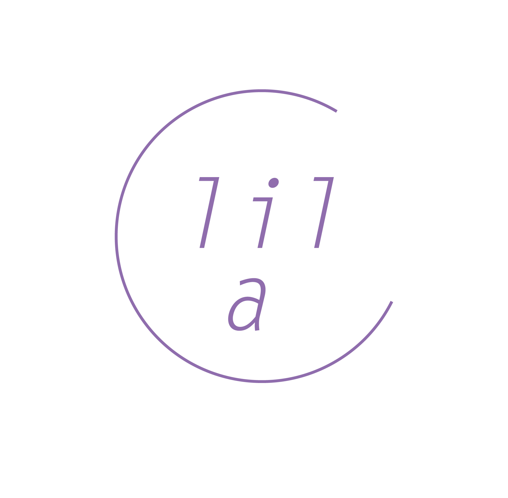

Lilac
closet,

라일락 수납장은
지난날의 추억을 아카이빙 합니다
Lilac : [ 지난 날의 추억 ]
라일락의 꽃말에 영감을 얻어 지난 날의 추억을 담아두는
가상의 수납장을 만들었습니다.지나간 계절들과 하루의 이야기와
이미지를 모으고 세상과 공유합니다.

first closet,
라일락 수납장의 첫번째 서랍은 [ film ] 입니다.
영상이 활동사진[motion fictuer]으로 불리던 시기가 있었습니다.
사진을 모아 연속적으로 붙이는 움직이는 사진을 만들었죠.
오랜 시간이 지나고 이제는 누구나 영상을 만들고 기록할 수 있습니다.
하루하루의 추억을 라일락 수납장이 보관합니다.
second closet,

라일락 수납장의 두번째 서랍은 [ picture ] 입니다.
디지털 카메라가 기본이 된 지금, 아날로그가 그리운 사람들은 아직도
필름카메라를 찾기도 하죠. 선명함으로 전달할 수 없는 아날로그의 불명확함이 전하는 감성이 분명 있다고 믿습니다
아날로그 감성의 하루가 라일락 수납장에 기록됩니다.
thrid closet,

라일락 수납장의 세번째 서랍은 [ write ] 입니다.
글이 가지는 내밀한 감정들은 기록을 더욱 풍부하게 만들죠.
지난 날의 기록들을 살펴볼 수 있습니다.